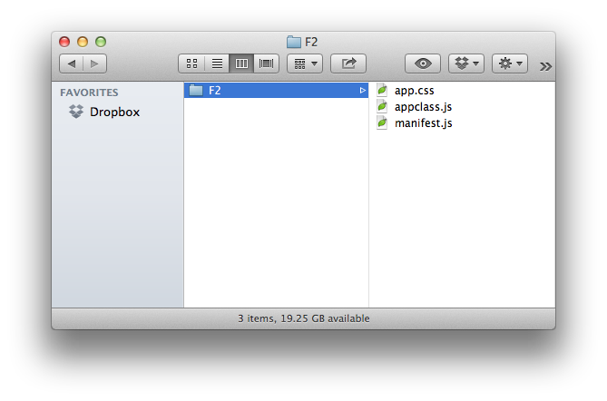

Apps are the building blocks of any F2-enabled solution. F2 apps are web-based, built with HTML5, CSS3, and JavaScript, and contain entitled data. F2 enables App Developers to build once and deploy to any container with a simple and modern API. You can read more about the framework, download the project on GitHub or get started below. The latest version of F2 is 1.4.0.
F2 apps are synonymous with modules, widgets and portlets. Think charts, portfolios, trade tickets, and screeners. F2 apps only need to be programmed once, no matter where they will be used. To start, F2 Apps are either:
For the purposes of the documentation on this page, we’ll focus on developing display apps. Browse to The Basics: Framework for more background information about F2 apps.
Interested in developing F2 containers? Browse to Container Development.
To help you get started building an F2 app, review the documentation and examples below. To jump start your F2 container or app development, download the F2 example container and apps.
To begin, you do not need to build (or compile) F2 as described in the readme on GitHub. Simply download F2.js and Bootstrap, and ensure you’re properly configured for continuing with the documentation.
Download F2.js Download Bootstrap
Setup a basic container HTML template (or add F2.js to an existing website):
<!DOCTYPE html>
<head>
<title>F2 Container</title>
<link rel="stylesheet" href="/path/to/your/bootstrap.css">
</head>
<body>
<script src="/path/to/your/F2.js"></script>
</body>
</html>
Note In developing a more advanced container, the HTML document’s body element would contain additional markup and allow for specific positioning or placement of apps. Additionally, more advanced containers could introduce features and functionality to their apps in the form of authentication APIs, streaming data feeds, federated search, etc. All containers must follow the F2 design guidelines.
var _appConfig = {
appId: 'com_openf2_examples_javascript_helloworld',
manifestUrl: 'http://docs.openf2.org/demos/apps/JavaScript/HelloWorld/manifest.js'
};
$(function(){
F2.init();
F2.registerApps(_appConfig);
});
Note For more information about the AppConfig, read up on them in Container Development: App Integration.
Now with a basic container and a basic app, combine these two for a working example. Press Result in this jsfiddle.
In getting to this point, you’ve only scratched the surface of F2 containers and apps. Continue reading and understanding the F2 spec to build exactly the financial solutions that our customers want.
Good news! In the project repo on GitHub, you will find a basic container along with a number of sample apps which demonstrate functionality far beyond the basic app above. Once you clone or download the project repository, open the sample container by pointing your browser at:
http://localhost/F2/examples/
These examples are also available in a separate archive if you don’t want to download the entire repository.
It is assumed you will be developing F2 apps locally and have a localhost setup. The URLs mentioned in this specification also assume you have configured your F2 apps to run at http://localhost/F2/. The examples provided as part of the project repository demonstrate apps written in different languages (PHP, JavaScript, C#). While it is not a requirement you have a web server configured on your computer, it will certainly allow you to more deeply explore the sample apps.
To better understand F2 and the role of apps, you need to understand the role of the container. If you haven’t already, read more about containers in the Framework.
To get started working with or developing containers, browse to the documentation for developing the container.
Ready to start coding?
Developing F2 Apps F2.js SDK Reference
Design considerations are an important first step when creating a new app. Content can range from news to research to multimedia, and content should be presented using Progressive Enhancement, Mobile First and Responsive Design methodologies. That is to say multimedia content, for example, should be shown plugin-free (using HTML5 video or audio elements) for capable browsers and fallback to Flash-based players for browsers that do not yet support HTML5 related technologies. (VideoJS is good example of open-source JavaScript and CSS “that makes it easier to work with and build on HTML5 video, today.”)
If App Developers embed URLs back to their own websites or to third party sites, URLs must be opened in a new window as to not interrupt the experience of someone using the container. If authentication is required on an App Developer’s site, this can be accomplished with pass-through authentication using encrypted URLs as discussed in Single Sign On.
In order to ensure that apps built using F2 are successful, they must be accessible. As such, F2 made choices for which open-source libraries and frameworks would be leveraged to reduce the level of effort across F2 adopters.
Read more about those choices in the Framework.
Ultimately, the responsibility of app design falls on either the Container or App Developer. In many cases, Container Developers will provide App Developers will visual designs, style guides or other assets required to ensure apps have the form and function for a given container. Container Developers may also provide CSS for App Developers to adhere to—which should be easy since F2 enforces a consistent HTML structure across all containers and apps.
Let’s take a close look at how to build an F2 app. We’ll explain how to get an F2 AppID, what the AppManifest is all about, what output format your app needs to support, how the contents of the AppContent.html property work, and the two hooks for adding form and function to your app: scripts and styles.
Before opening your editor, read the configuration assumptions.
To develop an F2 app, you need a unique identifier called an AppID. This AppID will be unique to your app across the entire open financial framework ecosystem. The format of the AppID looks like this: com_companyName_appName, where the companyName “namespace” is your company name and appName is the name of your app.
As an example, your AppID could look like this:
com_acmecorp_watchlist
If you built more than one app while working at Acme Corporation, you could create more AppIDs. All of these are valid:
com_acmecorp_watchlist2com_acmecorp_watchlist_big_and_tallcom_acmecorp_static_chartscom_acmecorp_interactive_chartsTo guarantee uniqueness, we have provided an AppID generation service that allows you to customize your AppID.
Once you have your AppID, start by setting up your project. You will need at least one file: the App Manifest. Create a new file called manifest.js. Also, chances are you’ll want custom styling and functionality, so go ahead and create appclass.js (for your app logic) and app.css for your CSS. Your project folder should look like this:

Helper Download the F2 examples or read about setting up a basic container and app in Getting Started.
For an app to be considered F2-capable, it must first have this basic structure—called the App Manifest—represented in JSON:
{
"inlineScripts":[],
"scripts":[],
"styles":[],
"apps":[{
"data":{},
"html":"",
"status":""
}]
}
The App Manifest can be generated by the server-side code of your choice or be written-by-hand in your favorite text editor. In the GitHub repository, there are apps written in JavaScript, PHP, and C# to serve as examples to get you started.
When it’s complete (using the examples further below), the App Manifest looks like this:
F2_jsonpCallback_com_companyname_appname({
"inlineScripts":["(function(){ var foo = bar; doSomething(); })()"],
"scripts":[
"http://www.domain.com/js/appclass.js"
],
"styles":[
"http://www.domain.com/css/app.css"
],
"apps":[{
"data":{
foo: "bar",
value: 12345
},
"html":"<div class=\"sunrise\">Hello world.</div>",
"status":"good"
}]
})
Let’s break the App Manifest object down and look at each property (in reverse order to keep it fun).
Note The AppID created in the Developer Center and specified in the AppManifest will get automatically lowercased by F2 when integrated on a container.
The apps property is an array of AppContent objects. Each AppContent object contains three properties:
html datastatusThe html property contains the view of your app represented in (optionally encoded) HTML. While you can modify the way your app appears or functions within the container, the html property is what the container will show when it registers your app and displays its contents for the first time.
Example:
"html": "<div class=\"sunrise\">Hello world.</div>"
The optionally encoded version of the html example above is:
"html": "%3Cdiv%20class%3D%22sunrise%22%3EHello%20world.%3C%2Fdiv%3E"
The data property exists to support the placement of arbitrary data needing to be passed along with the app. This field is optional.
Example:
"data": {
foo: "bar",
value: 12345
}
The status property allows app developers to communicate a server-side arbitrary status code to itself or to the container. This field is optional.
Example:
"status": "good"
The styles property is an array of URLs. The styles array refers to any CSS files needed by the app so it will be displayed properly on the container. The externally-referenced CSS files should be fully-qualified, including a protocol.
Example:
"styles": [
"http://www.domain.com/css/app.css"
]
In the case when multiple stylesheetes are needed, simply add to the array as shown in this example:
"styles": [
"http://www.domain.com/css/app.css",
"http://www.domain.com/css/app-responsive.css"
]
Read more about CSS and namespacing inside your app.
Note URLs referenced in the Scripts and Styles arrays are loaded synchronously by F2.js, so be sure to order your scripts properly.
The scripts property is an array of URLs. The scripts array refers to any JavaScript files needed by the app so that it will function correctly on the container. The externally-referenced JS files should be fully-qualified.
Example:
"scripts": [
"http://www.domain.com/js/appclass.js"
]
In the case when multiple scripts are needed, simply add to the array as shown in this example:
"scripts": [
"http://www.domain.com/js/lib.js",
"http://www.domain.com/js/appclass.js"
]
Read more about JavaScript and namespacing inside your app.
Note URLs referenced in the Scripts and Styles arrays are loaded synchronously by F2.js, so be sure to order your scripts properly.
The inlineScripts property is an array of strings. The inlineScripts array can include any JavaScript code needed by the app that cannot be included in your App Class. The contents of the inlineScripts array will be evaluated as JavaScript (using eval()) when all scripts have finished loading.
Example:
"inlineScripts": [
"(function(){ var foo = bar; doSomething(); })()"
]
While the use of inlineScripts is supported by F2’s App Manifest, it is not recommended for use. There are many reasons for this, the main one is to avoid cluttering the global namespace. Developers should make every attempt to put their JavaScript code inside their App Class.
Read more about JavaScript and namespacing inside your app.
Note URLs referenced in the Scripts and Styles arrays are loaded synchronously by F2.js, so be sure to order your scripts properly.
If we use the examples above, our AppManifest would look like this:
F2_jsonpCallback_com_companyname_appname({
"inlineScripts":["(function(){ var foo = bar; doSomething(); })()"],
"scripts":[
"http://www.domain.com/js/appclass.js"
],
"styles":[
"http://www.domain.com/css/app.css"
],
"apps":[{
"data":{
foo: "bar",
value: 12345
},
"html":"<div class=\"sunrise\">Hello world.</div>",
"status":"good"
}]
})
Note You may have noticed the presence of the function name F2_jsonpCallback_com_companyname_appname on the first line of the example above. That function name is the callback and is explained in App Manifest Response.
OK, so you know about F2 apps and you’re ready to write your own App Manifest. To go from zero to something, download the F2 examples. Once you have your AppManifest defined (or at least stubbed out), there’s one important detail you need to know now—the App Manifest response format.
As part of F2, containers register apps—typically hosted on different domains—using JSONP. This means F2 App Manifest files must provide a JSONP callback function. (If you don’t know what JSONP is or how it works, we recommend reading what Remy Sharp has to say about it.)
For security reasons, the App Manifest JSONP callback function must be a specific, reliable, and testable format. F2 has defined that using a combination of a string and your unique F2 AppID. The JSONP callback function name looks like this:
F2_jsonpCallback_<AppID>
When applied, the final (bare bones) App Manifest file looks like this example (where com_companyname_appname is your AppID):
//manifest.js
F2_jsonpCallback_com_companyname_appname({
"scripts":[
"http://www.domain.com/js/appclass.js"
],
"styles":[
"http://www.domain.com/css/app.css"
],
"apps":[{
"html":"<div class=\"sunrise\">Hello world.</div>"
}]
})
Note The JSONP callback function name will not be passed from the container using a traditional querystring parameter (HTTP GET), so you must configure this correctly for your app to appear on a container. This means you have to hard-code it in your AppManifest.
Note The AppID created in the Developer Center will get automatically lowercased by F2 when integrated on a container.
While it isn’t required, it’s expected every F2 app has HTML. The only catch is that the HTML isn’t provided by the app itself but rather passed to the container via the app’s AppManifest. Here are the steps for getting your app HTML into your AppContent.html property:
html property of your AppContent object within your App Manifest file’s App object.Wait, what? Check out this example below or browse to example apps on GitHub:
Step 1.
<div class="sunrise">Hello world.</div>
Step 2. Encoded HTML. (Optional)
%3Cdiv%20class%3D%22sunrise%22%3EHello%20world.%3C%2Fdiv%3E
Step 3. App Manifest file.
{
...
"apps":[{
"html": "<div class=\"sunrise\">Hello world.</div>"
...
}]
}
Note You are not required to encode the app HTML, so follow steps 2 and 3 above omitting the encoding step.
F2 uses and recommends Bootstrap for Container and App Developers to benefit from a consistent HTML and CSS structure regardless of who developed the F2 component. This way, Container Developers can write CSS they know will style F2 apps without engaging with the app developer to ensure compatability.
This also means App Developers must adhere to Bootstrap’s scaffolding guidelines as defined on their website.
An example two-column layout using Bootstrap-specifed markup:
<div class="row">
<div class="span4">...</div>
<div class="span8">...</div>
</div>
The .span4 and .span8 provide two columns in the 12-column grid.
Note Read more about Creating a Common Look and Feel with F2.
Once your app is on the container, chances are you’ll want it to actually do something. As an app developer, it is entirely up to you to write your own stylesheets and javascript code to add form and function to your app. F2’s standardized App Manifest provides hooks for your CSS and scripts to get onto the container—just use the scripts and styles arrays detailed above in the App Manifest.
Including your own CSS in the styles array of the App Manifest opens the door to the potential of unexpected display issues. Therefore, as an app developer, you are required to properly namespace your CSS selectors and declarations. For the details on writing correctly namespaced code, read the namespacing docs.
It is recommended you include your app styles in a file named app.css.
While it isn’t required, it’s expected all F2 apps will ship with javascript. This code should be included in an appclass.js file as shown in Setting Up Your Project. The F2.Apps property is a namespace for app developers to place the javascript class that is used to initialize their app. The javascript classes should be namepaced with the F2.App.AppID. It is recommended that the code be placed in a closure to help keep the global namespace clean.
For more information on F2.Apps, browse over to the F2.js SDK docs.
To make it even easier to build F2 apps and for faster app loading by the container, the F2.js SDK provides automatic JavaScript method execution at appropriate times during F2.registerApps() (and the internal _loadApps() method). If the class has an init() function, it will be called automatically during execution of F2’s registerApps() method.
We recommend—and have samples below for—two different patterns for writing your appclass.js code: prototypal inheritence or the module pattern.
When F2’s registerApps() method is called by the container, F2 passes three arguments to your App Class: appConfig, appContent and root. The SDK documentation details the contents of each arg and these should be familiar because appConfig contains your app’s meta, appContent contains your html, data and status properties, and root is the outermost DOM element in which your app exists on the container. The root argument provides your App Class code your app’s parent (root) element for faster DOM traversal.
Example:
//appclass.js snippet
...
var App_Class = function(appConfig, appContent, root) {
...
We won’t even begin to talk about or describe this fantastic design pattern simply because Douglas Crockford has already written all about it.
An example of an App Class using prototypal inheritance inside a closure is below. Note the inclusion of the App_Class.prototype.init() function—which will be called automatically during app load—and the trailing parentheses, (), which are responsible for automatic function execution. Thanks to the closure, the App_Class is returned and assigned to F2.Apps["com_companyname_appname"].
F2.Apps["com_companyname_appname"] = (function() {
var App_Class = function(appConfig, appContent, root) {
// constructor
}
App_Class.prototype.init = function() {
// perform init actions
}
return App_Class;
})();
`
As an alternative to the prototypal inheritance pattern above, appclass.js code could be written following the module pattern shown in the example below. Note the inclusion of an init() function—which will be called automatically during app load—and the exclusion of the closure and trailing parentheses present in the example using prototypal inheritance above.
F2.Apps["com_companyname_appname"] = function(appConfig, appContent, root) {
return {
init:function() {
// perform init actions
}
};
};
Of course, you don’t have to use either one of these patterns in your appclass.js file. What you do have to use is a function. That is to say the value assigned to F2.Apps["com_companyname_appname"] by your App Class code must be a function. Within F2’s registerApps() method, the new operator is used which produces an object and new instance of your app.
In the absence of a function in your appclass.js, F2 will be unable to load your app on a container.
If you don’t want to think about any of this and would rather just start coding, download the F2 examples.
Internationalization, or “i18n“, can be configured in a Container. This “locale” information is shared with all Apps using IETF-defined standard language tags such as “en-us” or “de-de” for English United States or German Germany, respectively.
Important Containers providing a locale config is only a means of communicating localization information in the container. F2 does not perform translations, number formatting or other localization modifications to Containers or Apps.
Container Providers can change the current locale using F2.Events. There is an event constant available for changing the locale called CONTAINER_LOCALE_CHANGE.
App Providers can listen for locale changes.
var currentLocale = F2.getContainerLocale(); //en-us
//listen for Container-broadcasted F2 event with new locale
F2.Events.on(F2.Constants.Events.CONTAINER_LOCALE_CHANGE,function(data){
//get newly-updated locale
currentLocale = F2.getContainerLocale(); //en-gb
});
There is a parameter sent to each AppManifest request during F2.registerApps called containerLocale. Apps can also call F2.getContainerLocale() to access the current locale of the container.
Here is an example of the two ways of getting the container locale inside an AppClass.
F2.Apps["com_companyname_appname"] = (function() {
var App_Class = function(appConfig, appContent, root) {
// "containerLocale" is added to the AppConfig
// during F2.registerApps
console.log(appConfig.containerLocale);//en-us
}
App_Class.prototype.init = function() {
// get locale using helper function
// if locale changes, this function will
// always return the current locale
console.log(F2.getContainerLocale());//en-us
}
return App_Class;
})();
Note For more detail on the containerLocale property, browse to the SDK for F2.AppConfig.
The F2 AppConfig has a localeSupport property (type Array) so each App can define the region and language combinations it supports. Container code could be written to inspect the localeSupport property of any apps before registering them.
Sample AppConfig showing the localeSupport property:
{
"appId": "com_companyName_appName",
"manifestUrl": "http://www.domain.com/manifest.js"
"name": "App Name",
"views": ["home", "settings", "about"],
"minGridSize": 4,
"localeSupport": ["en-us","en-gb"] //array of IETF-defined tags
},
Note For more detail on the localeSupport property, browse to the SDK for F2.AppConfig.
F2 is a web integration framework which means apps are inherently insecure—at least those non-secure apps. Following this spec, App Developers must avoid CSS collisions and JavaScript namespace issues to provide users with the best possible experience.
Note Continue reading for more specifics about secure apps.
As discussed in Developing F2 Apps: F2 AppID, to develop an F2 app, you need a unique identifier called an AppID. This AppID will be unique to your app across the entire open financial framework ecosystem. The format of the AppID looks like this: com_companyName_appName, where the companyName “namespace” is your company name and appName is the name of your app.
When Container Developers register apps, F2.js draws each app as defined by the ContainerConfig. Before the app is added to the container DOM, F2 automatically wraps an outer HTML element—with the AppID used as a class—around the rendered app.
This example shows app HTML after it has been drawn on the container. Note the com_companyName_appName classname.
<div class="f2-app-container com_companyName_appName">
...
</div>
To avoid styling conflicts or other display issues related to app-provided style sheets, App Developers must namespace their CSS selectors. Fortunately, this is quite easy.
Every selector in app-provided style sheets must look like this:
.com_companyName_appName p {
padding:5px;
}
.com_companyName_appName .alert {
color:red;
}
Note .com_companyName_appName is prefixed on both p and .alert selectors.
While the CSS cascade will assign more points to IDs and while prefixing F2 AppIDs on CSS selectors isn’t required, it is recommended.
.com_companyName_appName #notice {
background-color:yellow;
}
Note App Developers should familiarize themselves with CSS namespacing rules for Container Developers. They are largely the same with a couple notable additions.
It is a common web development practice to use CSS resets, and it is likely both Container and App Developers will use them. Since there are many ways to normalize built-in browser stylesheets, including Normalize.css which is used by Bootstrap, Container and App Developers must namespace their CSS reset selectors.
Important F2 continues to leverage Bootstrap as the means to achieve consistent HTML & CSS structures—and therefore seamless styling—between containers and apps. F2 has not upgraded to Bootstrap 3, the latest officially-supported Bootstrap version is 2.3.2. Read the blog post for more information on using Bootstrap 3 today.
Adhering to one of the OpenAjax Alliance goals, F2 also promotes the concept of an uncluttered global javascript namespace. For Container and App Developers alike, this means following this spec closely and ensuring javascript code is contained inside closures or is extended as a new namespace on F2.
To ensure javascript bundled with F2 apps executes in a javascript closure, follow the guidelines for the appclass.js file and one of the two patterns described (prototypal inheritance or module).
The F2.js SDK was designed with extensibility in mind and therefore custom logic can be added on the F2 namespace.
Example:
F2.extend('YourPluginName', (function(){
return {
doSomething: function(){
F2.log("Something has been done.");
}
};
})());
For more information, read Extending F2.
Apps are capable of sharing “context” with the container and other nearby apps. All apps have context which means the app “knows” who is using it and the content it contains. It is aware of an individual’s data entitlements and user information that the container is requested to share (name, email, company, etc).
This means if a user wants to create a ticker-focused container so they can keep a close eye on shares of Proctor & Gamble, the container can send “symbol context” to any listening apps that are smart enough to refresh when ticker symbol PG is entered in the container’s search box.
While apps can have context themselves, the responsibility for managing context switching or context passing falls on the container. The container assumes the role of a traffic cop—managing which data goes where. By using JavaScript events, the container can listen for events sent by apps and likewise apps can listen for events sent by the container. To provide a layer of security, this means apps cannot communicate directly with other apps on their own; apps must communicate via an F2 container to other apps since the container controls the F2.Events API.
Let’s look at some code.
In this example, the container broadcasts, or emits, a javascript event defined in F2.Events.Constants. The F2.Events.emit() method accepts two arguments: the event name and an optional data object.
F2.Events.emit(
F2.Constants.Events.CONTAINER_SYMBOL_CHANGE,
{
symbol: "AAPL",
name: "Apple, Inc."
}
);
To listen to the F2.Constants.Events.CONTAINER_SYMBOL_CHANGE event inside your F2 app, you can use this code to trigger an alert dialog with the symbol:
F2.Events.on(
F2.Constants.Events.CONTAINER_SYMBOL_CHANGE,
function(data){
F2.log("The symbol was changed to " + data.symbol);
}
);
The F2.Events.on() method accepts the event name and listener function as arguments. Read the SDK for more information.
Note For a full list of support event types, browse to the SDK for F2.Constants.Events.
Often times containers will want to send context to apps during app registration. This is possible through the AppConfig.context property. This property can contain any javascript object—a string, a number, an array or an object.
//define app config
var _appConfigs = [
{
appId: "com_acmecorp_news",
description: "Acme Corp News",
manifestUrl: "http://www.acme.com/apps/news-manifest.js",
name: "Acme News App",
context: {
sessionId: myApp.sessionId,
someArray: [value1,value2]
}
}
];
When F2.registerApps() is called, the appConfig is serialized and appended to the app’s manifest URL. The serialized object converts to stringified JSON:
{"appId":"com_acmecorp_news","description":"Acme Corp News","manifestUrl":"http://www.acme.com/apps/news-manifest.js","name":"Acme News App","context":{"sessionId":"12345", "someArray":["value1","value2"]}}
The appConfig object is sent to the server using the params querystring name as shown in the example below. This is the complete app manifest request sent by F2.registerApps() with the appConfig URL-encoded, of course:
http://www.acme.com/apps/news-manifest.js?params=%7B%22appId%22%3A%22com_acmecorp_news%22%2C%22description%22%3A%22Acme%20Corp%20News%22%2C%22manifestUrl%22%3A%22http%3A%2F%2Fwww.acme.com%2Fapps%2Fnews-manifest.js%22%2C%22name%22%3A%22Acme%20News%20App%22%2C%22context%22%3A%7B%22sessionId%22%3A%2212345%22%2C%20%22someArray%22%3A%5B%22value1%22%2C%22value2%22%5D%7D%7D
This demonstrates complete flexibility of passing arbitrary context values from the container to any F2 app.
Important To receive context from a container during app initialization, F2 App Developers are required to build object deserialization for the params value into their app code.
Note It is possible to override the AppManifest request and, among other things, change the default HTTP method from GET to POST. This is useful in a scenario when the serialized AppConfig exceeds the maximum URL length or when AppConfig.context contains secure information necessitating a POST. Read more about overriding the AppManifest request.
In this example, your app emits an event indicating a user is looking at a different stock ticker within your app. Using F2.Events.emit() in your code, your app broadcasts the new symbol. As with container-to-app context passing, the F2.Events.emit() method accepts two arguments: the event name and an optional data object.
F2.Events.emit(
F2.Constants.Events.APP_SYMBOL_CHANGE,
{
symbol: "MSFT",
name: "Microsoft, Inc."
}
);
The container would need to listen to your app’s broadcasted F2.Constants.Events.APP_SYMBOL_CHANGE event using code like this:
F2.Events.on(
F2.Constants.Events.APP_SYMBOL_CHANGE,
function(data){
F2.log("The symbol was changed to " + data.symbol);
}
);
Note For a full list of support event types, browse to the SDK for F2.Constants.Events.
Apps can also pass context between apps. If there are two or more apps on a container with similar context and the ability to receive messages (yes, through event listeners, context receiving is opt-in), apps can communicate with each other. To communicate with another app, each app will have to know the event name along with the type of data being passed. Let’s take a look.
Within “App 1”, context is sent using F2.Events.emit():
F2.Events.emit(
"buy_stock", //custom event name
{
symbol: "GOOG",
name: "Google Inc",
price: 682.68,
isAvailableToPurchase: true,
orderType: "Market Order"
}
);
Within “App 2”, context is received using F2.Events.on():
F2.Events.on(
"buy_stock",
function(data){
if (data.isAvailableToPurchase){
F2.log("Trade ticket order for " + data.symbol + " at $" + data.price);
} else {
F2.log("This stock is not available for purchase.")
}
}
);
The examples above demonstrate simple Context objects. In the event more complex data and/or data types are needed, F2 Context can support any JavaScript object—a string, a number, a function, an array or an object.
This is an example Context object demonstrating arbitrary JavaScript objects:
F2.Events.emit(
"example_event", //custom event name
{
//number
price: 100,
//string
name: 'John Smith',
//function
callback: function(){
F2.log('Callback!');
},
//array
watchlist: ['AAPL','MSFT','GE'],
//object
userInfo: {
name: 'John Smith',
title: 'Managing Director',
groups: ['Alpha','Beta'],
sessionId: 1234567890
}
}
);
If two apps want to communicate data for populating a trade ticket and execute a callback, appclass.js code might look like this:
F2.Events.emit(
"buy_stock", //custom event name
{
symbol: "GOOG",
name: "Google Inc",
price: 682.68,
isAvailableToPurchase: true,
orderType: "Market Order",
//define callback
callback: function(data){
alert('Trade ticket populated');
}
}
);
The F2 app listening for the buy_stock event would fire the callback function.
F2.Events.on(
"buy_stock",
function(data){
F2.log("Trade ticket order for " + data.symbol + " at $" + data.price);
//..populate the trade ticket...
//fire the callback
if (typeof data.callback === 'function'){
data.callback();
}
}
);
Context is a term used to describe the state of an F2 container and its apps. At the same time, Context is also the information passed from Container-to-App or from App-to-App or from App-to-Container. In the examples shown above, two types of context were shown: symbol and trade ticket context. It is important to realize F2.js allows client-side messaging between third parties using a collection of arbitrary name-value pairs. This provides the utmost flexibility and affords Container Developers the option to define context within their container.
Said another way, while { symbol:"AAPL", name: "Apple, Inc" } can be used to communicate symbol context, developers could also use { symbol: "123456789" } to identify Apple, Inc. The latter is more likely given not all apps would programmatically understand AAPL but—given symbol lookup services—would understand 123456789 as the universal F2 identifier for Apple, Inc. It is clear Container and App Developers alike would prefer to communicate with a guaranteed-to-never-change universal ID for all instrument types across all asset classes.
F2 will be providing lookup web services in future releases that provide universal F2 identifiers for container and app providers. These lookup services will not just be limited to symbols. Further details will be forthcoming as the F2 specification evolves.
F2 fully supports secure apps. A secure app is one that exists inside an iframe on a container and is hosted on a different domain. The F2.js SDK provides developers with seamless handling of Context, UI and the other F2 APIs whether or not an app is secure. This means app developers do not have to code apps any differently if an app is secure.
An app is defined as “secure” in the AppConfig. Creating the AppConfig is something that is done when apps are registered on the Developer Center.
Noting the isSecure property, the AppConfig looks like this:
{
"appId": "com_f2_demo",
"description": "A demo F2 app.",
"height":250,
"minGridSize": 4,
"manifestUrl": "manifest.js",
"name": "F2 App",
"isSecure": true //secure boolean
}
To see examples of secure apps, fork F2 on GitHub and point your browser at:
http://localhost/F2/examples/container/
The example container runs sample apps—defined in sampleApps.js—and that’s where you’ll find the isSecure flag defined in some of the AppConfig objects.
Good news! The container is responsible for loading its apps, and as long as you’ve followed F2’s standard for App Manifests and have a working—and tested—app, you’re pretty much done.
If you’re curious about how containers load apps, browse to the F2.js SDK registerApps() method or read Container Development.
When you cloned the F2 GitHub repo you also got an example F2 container for your app development and testing. Open the project repository and navigate to ~/F2/examples/container to find them or to jump-start your testing, point your browser at:
http://localhost/F2/examples/container/
If you open ~/F2/examples/container/js/sampleApps.js in your text editor, you’ll find a list of sample F2 apps broken down by programming language. Simply modify this file to your liking and add your app anywhere in the appropriate array (JavaScript, PHP or C#). The configuration is comprised of F2.AppConfig properties, and the following are the minimum required properties.
{
appId: "com_companyName_appName",
manifestUrl: "http://www.domain.com/manifest.js"
}
For full details on these F2.AppConfig properties and all the others, browse the F2.js SDK documentation.
There are some utility methods provided within F2.js in the UI namespace. These helpers are for controlling layout, showing (or hiding) loading spinners, modals, managing views within your app, and more.
While there are numerous utility methods in F2.UI, we will focus on a couple important ones here such as updateHeight() and showMask(). The F2.UI methods are passed as an instance to each F2 app’s App Class on the appConfig argument. The instance of F2.UI gets added to the appConfig object at runtime, and is available in appclass.js as appConfig.ui.
Example:
//appclass.js snippet
var App_Class = function (appConfig, appContent, root) {
this.appConfig = appConfig;
this.appContent = appContent;
this.ui = appConfig.ui; //F2.UI instance
this.$root = $(root);
}
As the layout inside your app changes, your app should update or refresh its height on the container. This is particularly important for those secure apps inside iframes. To handle this, F2.js provides a updateHeight() method you should call anytime a DOM element is added or removed from within an app.
Assuming the example above is used, the this.ui property holds the instance of appConfig.ui.
//appclass.js snippet
...
//user deletes row
$(".row").remove();
//call updateHeight method
this.ui.updateHeight();
...
Apps can show loading spinners—or “masks”—when they are being loaded by a container or afterwards when making data requests. Container Developers configure the UI.Mask as discussed in the SDK F2.ContainerConfig.UI.Mask docs, therefore it is simple for app developers to call showMask().
To show a loading spinner when making an ajax request within an app:
//appclass.js snippet
...
//show loading
this.ui.showMask(this.root,true);
//app makes data request
$.ajax({
url: "../data.json"
}).done(function(jqxhr){
F2.log(jqxhr);
//hide loading
this.ui.hideMask(this.root);
});
...
The showMask() method takes two arguments: a DOM element where to show the mask and a boolean indicating whether or not to show a spinning graphic.
If you do not want to show a spinning graphic, simply pass false to the showMask() method. A mask without a spinner is useful in the case when you want to “lock” the view from user interaction.
//appclass.js snippet
...
//show mask, no spinner
this.ui.showMask(this.root,false);
...
For full details, read about F2.UI in the SDK.
To update the title of an app in the app’s chrome (as defined by the container in F2.ContainerConfig.appRender), very simply pass a string to the setTitle() method.
//appclass.js snippet
...
this.ui.setTitle("Chart for MSFT");
...
F2.js provides two methods in F2.UI for modal dialogs. F2 uses and recommends Bootstrap for many reasons, and taking advantage of Bootstrap’s modals was an easy choice.
For full details on F2.UI.Modals and the two types of modals (alert and confirm), read the SDK docs.
Usage is simple:
//appclass.js snippet
...
this.ui.Modals.alert("A message to display in a modal.");
...
You can optionally provide a callback to be fired when the user closes the modal.
//appclass.js snippet
...
this.ui.Modals.alert("A message to display in a modal.", function(){
F2.log("Modal closed!");
});
...
Additionally, there is a confirm modal.
//appclass.js snippet
...
this.ui.Modals.confirm(
"A message to display in a confirmation modal.",
function(){
F2.log("OK clicked");
},
function(){
F2.log("Cancel clicked");
}
);
...
Adding and managing views within an F2 app is considered an advanced topic. If your app only needs a single view, you don’t have to worry about reading this part of the F2 spec.
F2 apps can have one or more views. Every app will have at least one “home” view, while others will include views for settings, help or about. Inside the F2.js SDK, we’ve included support for views and the list can be extended by the container provider.
Note If the container doesn’t support all the views you need inside your app, you will need to coordinate those additions with the container provider.
Once you’ve determined the views you’d like to include in your app, the view should be specified by applying the F2.Constants.Css.APPVIEW classname to the containing DOM Element. A data- attribute should be added to the element as well which defines what view type is represented. Bootstrap’s hide class should be applied to views that are hidden on startup.
To setup a single view in your app, use this HTML on your app’s outermost element noting the use of the f2-app-view classname and the data-f2-view attribute.
<div class='f2-app-view' data-f2-view='home'>
...
</div>
To setup multiple views in your app, write HTML like this noting the use the f2-app-view and hide classnames as well as the data-f2-view attributes.
<div class='f2-app-view' data-f2-view='home'>
...
</div>
<div class='f2-app-view hide' data-f2-view='about'>
...
</div>
For details on F2.Constants.Css.APPVIEW, browse to the SDK docs.
The F2.UI namespace provides an API for developers to manage F2 app View state.
To programmatically change a View in javascript:
appConfig.ui.Views.change(F2.Constants.Views.HOME);
Note When appConfig.ui.Views.change() is called, the hide classname is automatically added or removed by F2.js depending on the visibility of the view. Read more in the SDK docs.
In F2 app HTML, you can use a combination of CSS classnames and data- attributes to provide UI elements making it easy for users to navigate between Views.
For example, an app has two views: “home” and “about”. On the “home” View, a button allows the user to navigate to the “about” view. In the presence of the classname f2-app-view-trigger and the data-f2-view data attribute, F2.js automatically adds a javascript event to the button.
<div class="f2-app-view" data-f2-view="home">
<!--use 'data-f2-view' to switch to the "about" View-->
<button class="btn f2-app-view-trigger" data-f2-view="about">Show About View</button>
</div>
To get back to the “home” View from the “about” View:
<div class="f2-app-view" data-f2-view="about">
...
<button class="btn f2-app-view-trigger" data-f2-view="home">« Back Home</button>
...
</div>
You shouldn’t be surprised to know F2.js contains event triggers for handling app View changes. To listen for View changes inside F2 app javascript code:
appConfig.ui.Views.change(function(view){
F2.log("View changed to ", view);
});
For details on F2.UI.Views, browse to the SDK docs and for details on F2.Constants.Views, head over to the F2.Constants docs.
User or content entitlements are the responsibility of the App Developer. Many apps will need to be decoupled from the content that they need. This could include apps like research aggregation, news filtering, streaming market data, etc. Similarly to how companies build their own websites today with their own authentication and access (or content) entitlements, F2 apps are no different.
Further details around app entitlements will be forthcoming as the F2 specification evolves.
Single sign-on (SSO) is a shared responsibility between the Container and App Developer. In some cases, containers will want all of its apps to be authenticated seamlessly for users;that will be negotiated between Container and App Developers. For the purposes of this documentation, it is assumed Container Developers will build and host their container access authentication.
Once a user is authenticated on the container, how is the user then authenticated with all of the apps? Encrypted URLs.*
Note The Container Developer is free to utilize any app authentication method they deem fit. Container Developers and app developers will need to work together to finalize the authentication details.
Implementing SSO using encrypted URLs is a simple and straight-forward authentication mechanism for securing cross-domain multi-provider apps. To guarantee security between the Container and App Developer, secure API contracts must be negotiated. This includes, but is not limited to, the choice of cryptographic algorithm (such as AES) and the exchange of public keys.
When the container provider calls F2.registerApps(), custom logic should be added to append encrypted user credentials—on a need-to-know basis—to each app requiring authentication.
Read more in Developing F2 Containers.
Authentication is a critical part of any container-app relationship. There are a plethora of SSO implementations and there are many considerations for both Container and App Developers alike.
Further details around container and app single sign-on will be forthcoming as the F2 specification evolves.